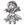

|

Dark Master Schmidt
Author of 7 Stories |
Disclaimer:
Dark Master Schmidt: I don't own Ranma; if I did, I wouldn't be writing fanfiction. The only thing I own is the story, which is not entirely mine, either, anyway...
Nuvares: Yeah, what he said.
"..." Chinese.
"(...)" Japanese.
'...' Thoughts.
The Wild Falcon
By
Dark Master Schmidt
& Nuvares
Chapter 3: Catching Up with Chaos
Ranma lazily rested the back of his head on the large tree. Watching Ryouga perform his usual morning kata through his sleepy eyes, he made a loud yawn and scratched the top of his head. It had already been a week since Ryouga had found him. Well, technically, it was Ranma who had found Ryouga, but that didn't really matter.
For some reason, Ryouga seemed to hate Ranma's guts. Yet, at the same time, he didn't seem to mind Ranma sticking along and leeching off his limited food supply. Ryouga also gave him his spare clothes, which thankfully fit just fine. Ryouga's behaviour was quite baffling, and also very annoying.
Ranma decided to get up and join Ryouga with his own kata. He needed all the exercise he could get to get back in shape.
As Ranma commenced his exercise, he briefly wondered when they were going to eat breakfast; he was starving. Ranma thought this would be a good way to start some conservation with the other cursed boy. Though, before he could open his mouth to speak, Ranma lost his balance right after making a sudden turn.
"(Ow, damn.)" Ranma cried out as he landed to his side.
This caused Ryouga to stop whatever he was doing and sigh at Ranma's direction. "(Again? You're pathetic, Saotome.)" Ryouga crossed his arms. "(And here I was hoping to kick your ass. You can barely walk, let alone fight me.)"
Ranma let out a snort at Ryouga. "(Well, excuse me, princess!)" Ranma rolled his eyes while he got back up to his feet. "(I'd like to see you get stuck as a friggin' bird for a little over half a year and see how you'd fare.)"
"(That was your own fault for not listening to the Jusenkyo guide, you retard.)" Ryouga retorted.
Ranma's eyebrow twitched angrily. "(Hey, I was pretty freaked out, you know? How the hell do you think I was supposed to react? How did you react when you got your curse, eh, tough guy?)"
"(Well, I...)" Ryouga stopped himself from answering, sweating a bit. There was no way in hell he was going to tell Ranma he cried and fainted from shock. "(Anyway, you shouldn't have run away, idiot.)"
"(Oh, so you're changing the subject now! Fabulous!)" Ranma exclaimed sarcastically.
"(Screw you, Saotome! At least I'm not as weak as you are now!)" Ryouga growled. He was really starting to get angry.
"(What did you call me?)" Ranma sneered at the other boy. "(I dare you repeat that.)"
"(Oh, gladly. You are weak. Weak, weak, weak, weak. I could beat you up without even trying.)"
"(Oh, yeah? You wanna piece of me, pretty face?)" Ranma took a fighting stance. "(I'm going to kick your ass for that one, Ryouga.)"
"(I'd like to see you try, featherhead.)" Ryouga took his own fighting stance as well. He was going to show that arrogant bastard his place.
Seconds pass with nothing, but the two teenagers eyeing each other scornfully.
'I'll show him.' They thought simultaneously, and then, they charged, each with a battle cry rivalling that of the other.
Within her room, Xian Pu muttered a curse under her breath whilst preparing her pack. Xian Pu couldn't believe it. She had lost a battle, to a female outsider no less. To be quite honest, Xian Pu didn't feel like hunting her to the ends of the earth, but laws were laws; and so, she was obliged to find her and give her the Kiss of Death.
Xian Pu froze. That... didn't feel right. Was she really going to kill her, that outsider girl...? As Xian Pu thought about her, she felt a familiar sensation returning to her. That feeling; it was the same when they fist met. What was this? Why did she feel this way, and towards another girl? That was just wrong.
Xian Pu started to breathe heavily. Her face felt hotter by each passing second. Bringing her cool hands to her heated face, she felt her hear beat faster. Xian Pu then had a thought. Never ever Xian Pu thought she'd do something like this, but it was very hard to resist. Moving one hand away from her face, she slowly slid it downwards from her hot neck, across her soft round breasts, but then Xian Pu pauses hesitantly. Xian Pu could hear her breathing get louder. She was getting very...
"Xian Pu!" a voice yelled from behind her.
Startled, Xian Pu frantically jumped into standing position awkwardly. "Y-y-y-yes! What is it, great grandmother?" She turned to the door, where she saw her great grandmother standing.
Koh Lon blinked at her sudden outburst. "Are... you feeling all right, Xian Pu? Your face is awfully red."
"Of-of course I am! It's just a little bit hot in here, that's all!" Xian Pu waved her arms around nervously. She mentally cursed herself for attempting to do that, without even closing the door! What was she thinking?
"Is that so..." The old woman looked at her suspiciously. "At any rate, I came to see if you're ready."
"Yes! Yes, I am. In fact," Xian Pu quickly wore her backpack, "I was about to depart just now." She carried a large Chinese sword off of her bed. "Well, then. If you'll excuse me..." Xian Pu rushed past her.
Koh Lon stood there, watching her great granddaughter fade away from her sight. Something about Xian Pu felt off.
Very off, indeed.
"(Argh!)" Ranma growled at Ryouga angrily. "(Ryouga, you bastard. That was a cheap shot!)" Ranma winced as he held his left arm.
"(Cheap?)" Ryouga maintained his defensive stance some metres away. "(That wasn't cheap; you just suck ass, Saotome.)"
"(I'll show you who sucks, pretty face!)" Ignoring the pain, Ranma lunged again at his opponent.
"(Bring it!)"
The Jusenkyo guide carried his usual patrol around the cursed springs. From the spring of drowned Ashura to the spring of drowned girl, everything seemed normal so far; there was no sign of outsiders. Only after reaching a certain spring did he realise something was not right.
"This is the spring of drowned Phoenix girl..." The guide crossed his arms as he stood over it, careful not to curse himself. Was it just him, or did the spring suspiciously move somehow...? "Hmm..." The guide scratched the back of his head. "That's funny. That Japanese boy fell here the other day, but..." The guide frowned. Something didn't feel right. Could this have been the same spring? No, no. This spring was different. It couldn't have been the same spring. Then, he came to a sudden realisation.
"Oh, God, no." Had the guide made a mistake? He quickly turned and scanned the springs. The guide almost instantly found it; the spring the Japanese boy fell into. His fears were confirmed. He had blundered. "That spring is... Oh, shit. Shit, shit, shit, shit, shit." The guide held his head and walked around in circles, all the while cursing his mistake. "What should I do?" He stopped in his tracks and began to contemplate. He couldn't believe he mistook the curse. First he cursed the boy and then made the dreadful error of mistaking the curse. The guide must have been waning with age...
No, wait. The boy was already gone, and in addition to that, he had not signed the Jusenkyo guestbook. The world was a big place. As long as he didn't come back, no one would find out. Indeed, no one would find out. That line of thinking eased his thoughts for a moment, but then he remembered something else.
"Oh, crap. Plum!" The guide rushed back to his house, loudly opening the door. "Plum, are you in here?" Looking around frantically, he noticed a piece of paper, neatly placed beneath a pen upon a table. Recognising Plum's handwriting, he quickly snatched the paper off the table, and began to read it out loud.
"Dearest father,
There is something that I have been wanting to tell you, but I couldn't sum up the courage to tell you directly, so I'm writing my thoughts on this paper for you.
I'll get straight to the point. As you can see, I am no longer here. For the past few days, I have been battling my emotions, but I realise that I must be true with myself; I cannot lie to myself anymore. Hence, I have gone to a journey to find the person who has stolen my heart. Please don't try to follow me, because frankly, you can't. I'm determined to do this, and no one can stop me.
But I promise you; I will return home one day as a real woman. I will make you proud of me, daddy.
Your loving daughter,
Plum.
P.S. I know you'll miss my food, so I'll send you some recipes by mail occasionally. ^^/"
The guide dropped his daughter's note in shock. He couldn't believe this. His own daughter had left him, and for that... that little... She wasn't even of age yet. How was he going to explain this to his wife? She was going to kill him.
"NOOOOOOOOOOOO~"
Ryouga held his face in pain. "(Damn you, Saotome!)" He roared like a demon. "(How dare you strike while I wasn't looking!)"
Ranma smirked from a safe distance. "(It's not my fault you suck at dodging, pretty face.)"
Ryouga growled at Ranma's insult. "(If you call me that one more time, Saotome...)"
"(Whatever, princess. Let's just get this over with.)"
"(DIE, SAOTOME!)" Ryouga charged at his rival.
"(Bring it!)"
Mint sighed in annoyance. "Jeez, you guys," he exclaimed at their prisoners from Joketsuzoku.
Behind bars, four women of Joketsuzoku lay on the ground lazily, while two others were killing time by playing cards.
"Hah! I got you there, Ling Ling!" Xiao Ming exclaimed in triumph.
"Ah! That's not fair!" The younger girl complained. "You always get the best cards..."
Lime turned to his partner. "Think maybe we should use force?" He scratched the back of his head.
"Nah. You know how Prince Herb hates abusing prisoners."
"Oh, man. We won't be getting anything done at this rate, though..." Lime grumbled at the carefree women. "I mean, just look at them!"
Mint sighed again. "Come on already!" He kicked the bars loudly. "I'm getting tired of this! Just tell us what you know of that Phoenix girl!" Mint yelled in annoyance.
Lei Fan picked her ear with her pinkie. "For the thousandth time, we don't know." She turned into a more comfortable position. "We saw her outside our village, and then we chased her all the way here. What more do you want?"
Mint groaned in frustration. "And you expect us to believe that?"
"Calm down, Mint. Maybe they're telling the truth?"
"Yeah, right."
"Believe what you want, kid." Lei Fan rolled her eyes. "And how long do you plan to keep us here? I know you'd rather let us go instead of having us freeload at your expense."
"She's right, Mint." Lime nodded. "These guys eat way too much, shower too often, keep asking for new playing cards, and order a lot of video games, among other things. Basically, consume a lot of resources."
"I'm aware of that." Mint blinked. "Hold on... Video games? Who the hell gave them the liberty to do that?"
"W-well..." Lime blushed. "You know."
"You idiot." Mint shook his head solemnly. "Stop being so nice to them!"
"Hey! I can't just reject their service!" Lime instantly covered his mouth. 'Oops. Shouldn't have said that...'
"Oh? Service, eh?" Mint narrowed his eyes. "I see now. What have you been doing behind my back, Lime?"
"Hey, it was kinda hard to resist!" Lime protested weakly.
"You idiot!" Mint held him by his collar. "You've gone and done it without me? How could you leave me out?"
"Hey, no need to get so angry. There's always next time."
"Next time? Think I'll forgive you that easily?"
"Uh, yeah?"
"Think again!" Mint shook him by his collar.
"Ack!"
Lei Fan watched their bickering intently. "Hey, these clowns are pretty entertaining..."
One of the younger warriors looked around innocently. "Anyone up for some ChuChu Rocket?"
"I'll take you on, Chyou!"
"Me, too."
"Guess I'll give it a shot as well."
Ranma distanced himself from Ryouga after he nearly beheaded him with one of his powerful punches. Gasping hard for his breath, he tried to think of a strategy into beating the other martial artist. Trying to piss off Ryouga worked for a while, but Ranma's endurance gave in before he could do a lot. He was getting extremely tired, while Ryouga didn't seem to be affected much. If Ryouga could manage to land a few more hits, it would be over for Ranma. 'Damn. Think, think... I ain't losing to that girlie man. I'll kill myself before that happens.' Ranma cursed under his breath. Since it was coming to this result, he had no choice but to use more desperate attacks. Ranma finally smirked again; he knew exactly what to do.
Ryouga grimaced at Ranma's expression. Whenever that moron smirked in that fashion, it meant that he was going to pull something annoying out of his ass. Not that it mattered. Ranma was getting exhausted, even Ryouga could tell as much. One kick; just one kick at the right place and it was going to be all over. Ryouga needed to get that hit connect before Ranma could get the chance to do something. "(Get ready to lose, Saotome.)"
"(Me, lose? When pigs fly, pretty face.)" Ranma waited for Ryouga to attack, and Ryouga did not fail to meet his expectations.
Ryouga launched one punch, and then followed by a second, an upper cut, both of which barely missed Ranma by a hair. It was then when Ranma found an opening; the failed uppercut left Ryouga wide open. Forming a smirk, Ranma felt every muscle in his body jump towards his chance to victory. He lashed downwards with a kick at all the strength he could muster. Victory was his.
Ryouga saw this and smiled. "(Predictable!)" With a cry, he lashed with an upwards kick of his own. Ryouga was going to win; he was sure of it. While Saotome had kicked first, he was too tired, and hence, Ryouga's kick would connect first. He had won, it was over!
Ranma had similar thoughts in his mind. Time seemed like it had stopped, rendering them frozen as they were executing their kicks. Ranma seriously didn't consider Ryouga would think ahead. If Ryouga's kick hit him first, Ranma would lose. Yes, he would lose... 'Me, lose? To that... That Ryouga? Like hell I will! I ain't losin'! Not today!' With desperate thoughts of victory in his mind, adrenaline rushed through Ranma's body, and he felt his kick move faster than before. Then victory came! He felt his kick connecting. However, he also felt Ryouga's kick connect as well.
They had both succeeded... at hitting the other's testicles with unthinkable force. Unimaginable pain ran through their crotches, as they instantly writhed on the ground, voicelessly screaming their agony.
Xian Pu had been walking for a while trying to pick up on the tracks of the phoenix girl but it was hard going, they appeared and disappeared only to appear again later; it was as if she was walking, flying then walking again. The two sets of male prints that were all over the place didn't help either. Always she would enter the remains of a campsite, and then they would leave. Then later on she would appear and both of the men would disappear.
"Companions? But no, they're never together..."
"(Argh!)" Ryouga held his balls in pain. "(Saotome... You motherfucker...)" Ryouga could barely speak. He had decided to insult his rival at the only chance he got.
"(Urmph!)" Ranma shared the same sentiment, but lacked the energy to speak.
Purely by chance, Ryouga's face turned towards the direction of their camp. Ryouga got an idea that he hoped it would work. Unable to move his legs, he used one arm to crawl back to the camp. It took him nearly one minute to reach his pack. Wasting no time, he searched frantically for his thermos and splashed himself with ice cold water.
Ryouga gasped heavily as the pain instantly disappeared. She almost cried from joy; almost. She didn't even notice the back of her shirt was torn apart. "(Oh, man. For the first time in my life, I'm glad my balls are missing.)" Ryouga looked at Ranma and grimaced. "(Poor bastard...)" She threw her thermos on top of Ranma's head.
"KUEH!" Ranma flapped his wings and gasped similarly like Ryouga. 'Man, I thought I was gonna die.'
"(Feh. Maybe I should have let you die.)"
"Kueh!" Ranma glared at the girl angrily. 'Ryouga, you bastard! Where the hell were you aiming?'
"(I should be asking you the same thing, you retard!)" Ryouga glared back.
'Whatever. Just gimme some hot water, will you?' Ranma walked towards the girl.
"(The hot water's in this one.)" Ryouga placed another thermos in front of the falcon. "(Be my guest, Saotome.)"
Ranma looked at it for a moment before attempting to open it. "Kueh!" Ranma struggled to open the top cover with his large beak.
Ryouga sniggered at the falcon's predicament, amused. "(Keep at it, Saotome.)"
"Kueh!" Ranma exclaimed angrily. 'Help me out, you dolt!'
"(Why should I?)" Ryouga narrowed her eyes, earning a hateful glare in response. "(Oh, fine.)" Ryouga opened the thermos and poured hot water on the falcon.
"(Ryouga, you little...!)" Ranma pulled on Ryouga's collar, causing her torn shirt to slip up enough to reveal the cleavage of her breasts. Ranma froze and blushed a little as he stared. For his achievement, Ranma earned a direct punch to the face.
"(Watch where you're grabbing, you moron.)" Ryouga straightened her shirt. She watched Ranma rub his face before telling him, "(Make yourself useful and go get some water from the river.)" She threw him an empty bucket.
"(Why do I have to do it?)" Ranma sulked.
"(You used the last bit of water,)" Ryouga explained. "(Stop being a lazy bum and do something.)"
"(Yeah, yeah.)" Ranma gave up and went to fetch some water after getting dressed.
Ryouga sighed as soon Ranma was gone. She can finally change into a new shirt. Ryouga seriously needed to do something about this curse. She was running out of shirts at an annoyingly rapid pace...
Xian Pu examined the tracks on the ground. The footsteps were fresh, albeit heavy for a girl of her figure. But there was no doubt that they belonged to the person she was looking for. Xian Pu picked up a large black feather off the trail. After all, who else could carry a feather as large as this one? No species of large birds lived around these parts; those birdmen didn't casually walk around here, either. The size for the footprints seemed to be about right as well.
"But..." Xian Pu looked at a set of prints some centimetres away. "Someone else is with her." She walked along the tracks. That other person didn't matter. As long as Xian Pu would find her, she couldn't care less.
As she walked, their trail became clearer. They were probably close, she guessed. Five minutes later, she heard the arguing of people in a funny language; one female and one male voice. The language was probably Japanese. That annoying Mu Tzu was fluent in that one, and he spent every waking moment to flaunt his skills.
At any rate, Xian Pu was incredibly close now. She carefully leapt on the branches of a large tree. Looking on the other side, she smiled. Xian Pu had finally found her. The winged girl was looking at someone. Shifting her sights, she found a half naked man getting dressed. Xian Pu almost lost her balance off the branch when she saw that. "Oh, my..." Xian Pu wondered who that man was, and why he was looking like that in front of a girl.
Unless...
"Oh, no..." Xian Pu frowned. "They couldn't have..." She shook her head. She had a man? That couldn't be! "But... But she was..." She felt rage swell up inside of her. Without noticing that he had left, Xian Pu threw her sword towards the lone girl. Fortunately, the sword only landed directly in front of her.
"(What the hell?)" Ryouga jumped in surprise. Before she could check what had happened, Xian Pu landed in front of the girl, looking extremely irritated. "(Eh?)"
Xian Pu stood there and fumed.
"(Oh, it's you...)" Recognising the girl, Ryouga backed away carefully.
"I'm going to kill you!" Xian Pu pointed with her sword.
"H-hey! Hold on!" Ryouga barely avoided her swing. "What do you think you're doing?" Ryouga ducked another strike. "I said wait!"
"Shut up." Xian Pu lashed another vertical slash.
Ryouga dodged to her right. "Stop it! That's dangerous!" Ryouga carelessly tripped. "(Shit!)" Ryouga looked upwards and saw that the other girl's blade was already coming down at her. That was it; there was no way Ryouga could avoid that one. Ryouga raised her arms protectively, bracing herself for the impact. "Ah!" She closed her eyes in fear.
The pain never came. "Eh?" Ryouga opened one of her eyes. Xian Pu's slash was stopped halfway. Ryouga let out breath she didn't know she was holding. 'I'm saved... I think.' Ryouga looked back and saw her sword shaking for a brief moment before dropping to her side. Ryouga eyed it nervously at the corner of her eyes.
Xian Pu stared at downwards sadly. She couldn't do it... But why? Why couldn't she do something so simple? Why did she find it hard to move when she tried to kill her enemy? Why did her arms feel so stiff when she tried to slash her? "Why? Why?" Xian Pu felt tears stream down her face.
"Hey, now!" Ryouga growled as she stood up. "What the hell was that? I could have died, you know!"
Xian Pu felt her words stab her. "Are you angry with me?" She asked in a broken voice.
"You damn right I'm angry!" Ryouga would have proceeded to give her a piece of her mind had not Xian Pu showed Ryouga her tearful face. "Oh, hey..." Ryouga felt her heart drop to the ground.
Xian Pu sniffed and her cried harder. She couldn't believe she was crying, to an enemy no less. Thinking about it made her want to cry even harder.
"Oh, come on... I'm not that angry! Really!" Ryouga tried to cheer up the crying girl. Ryouga didn't know what the hell to do; she wasn't good with women, even less with the weeping ones. "Actually, I'm not angry at all anymore!"
Xian Pu wiped her tears away. She needed to stop crying, but it was hard. It felt less painful to cry, and so easy. How could she not cry after her failure? Not only did she not kill her enemy, she couldn't even give her the Kiss of Death. The kiss... Xian Pu walked to the other girl, wrapping her hands around her face.
Ryouga blinked once. "Wha-" Ryouga only barely started her question before her lips were interrupted with Xian Pu's, causing her to wide eyes in shock.
Xian Pu had kissed her.
"(That stupid Ryouga.)" Ranma sulked as he walked back to camp. "(Makin' me go and get the water. Bah. What if I get splashed? Didn't he think of that? Hmm?)" Ranma ran back. He wanted to eat something already!
Ranma held the bucket away from him as he increased his speed. "(Food, food, food, food...)" Ranma's stomach growled in response to his chanting.
Once he neared their camp, Ranma slowed down. He would have kept his pace, but stopped all movement when he heard voices.
"What do you think you're doing? I said wait!" Ryouga's voice called.
"(Hmm? Wonder who the princess is talking to.)" Ranma briefly noted the improvement of Ryouga's Chinese. It's almost as if she had a natural ability with languages. 'He shoulda been a bit nicer considering I helped him. That jerk.'
The sound of a sword slashing through the air travelled to Ranma's ears. Frowning, Ranma stepped into the clearing where their camp was. "(What the hell is going on here?)" Ranma saw Ryouga getting attacked by another girl. "(Hey, isn't that...)" Ranma smirked. He never thought he'd see that girl again. Looking around briefly, Ranma hid behind a set of bushes and watched the two intently.
Ranma almost burst out laughing when Ryouga tripped and fell on her butt. "(This is getting good...)" Ranma watched the purpled haired girl stop her attacks. "(Is she crying?)" Ranma asked himself.
Ryouga seemed to say something, probably trying to cheer her up.
As Ranma began to wonder how Ryouga knew that girl, a shocking scene unveiled. The girl had launched herself on Ryouga and kissed her. "(Holy shit.)" Ranma nearly jumped from his hiding place. "(Damn... Damn. That Ryouga? Who knew?)"
Ranma licked his lips and continued watching the show.
Ryouga did nothing to resist the other girl. She just stood there and took it; Ryouga was too stunned to do anything.
Bringing Ryouga on her back, Xian Pu explored her mouth with little to no resistance. Xian Pu herself didn't know what she was doing, she just did it. Her body moved on its own will.
Xian Pu felt like she could continue kissing her forever, but even she needed oxygen. Finally parting her lips, she could see a line of saliva from her tongue still keeping them connected for a moment before breaking off.
Taking a breath herself, Ryouga finally came back to her senses. "Guh..." Ryouga shook her head, as if to make sure what happened wasn't a dream. "Wha-what the hell?" Ryouga asked in confusion.
Breathing heavily, Xian Pu held Ryouga's face again. "You. Kiss me." Xian Pu demanded before connecting her lips with Ryouga's again.
Ryouga felt her male urges kick in this time. Holding Xian Pu tightly, she kissed her back. Xian Pu's long dishevelled hair sprawled around her.
Ranma gulped as he watched the girls go at it. "(Shit. This is pretty hot.)" Ranma wiped his drool. Keeping his boner in check, Ranma enjoyed the shape of their breasts brushing each other under the fabric. "(Argh. This is too damn good...)" Ranma tried to walk away and calm himself down, but found himself unable to move.
By this time, Ryouga and Xian Pu had already finished their third kiss. Xian Pu was pretty unsatisfied, though. She wanted more... Something better, stronger.
Reaching for Ryouga's shirt, she tried to pull it off, but was stopped by Ryouga's hand.
"Hey, wait a sec. We can't do this!" Coming to her senses, Ryouga pushed her away gently.
'Ryouga, you moron!' Ranma fumed. 'Just do it!'
"Why? Do you not... like me?" Xian Pu looked at her sadly.
"W-well... I guess I do, but..."
"Then there's no problem! Take it off!" Xian Pu tried again.
'Yeah!' Ranma cheered. 'Do it! Do it! Do it! Do it! Do it...!'
"I said no!" Ryouga stopped Xian Pu again. "We barely even know each other!"
Xian Pu's eyebrow twitched angrily. "Well, you certainly didn't seem to mind kissing someone you didn't know!"
"Hey! You were the one who kissed me!" Ryouga argued.
"You kissed me back!" Xian Pu countered.
"I did not!" Ryouga lied.
"Don't lie to me! What, did you magically decide to violate my mouth? Do you take me for an idiot?"
"W-w-well..." Losing the argument, Ryouga decided to change the subject. "You shouldn't have jumped on me in the first place anyway!"
"What! Why, you..."
Ranma groaned in boredom. "(I wish they'd end this lovers' quarrel and get it on already. What a boner killer.)" He looked at the bucket of water, suddenly remembering it. "(Oh, yeah... I forgot about this thing.)"
Lifting it again, he walked back casually. Passing by the oblivious couple, he immediately started Ryouga's portable stove.
"(That should do it.)" Ranma placed a kettle filled with water and turned his attention back to the two girls. "(Oh, man. They're still at it?)"
"Besides!" Ryouga was shouting now. "Go fulfil your homosexual fantasies elsewhere! I'm the wrong person for you."
Xian Pu looked away from her. "So that's it..."
"Eh?" Ryouga blinked at her sad expression in confusion.
"You don't care about me, do you? It's because you have him, isn't it?"
'Him?' Ranma and Ryouga wondered simultaneously.
"(This is getting interesting...)" Ranma mumbled to himself.
"What... the hell are you talking about?" Ryouga asked, baffled.
"Don't play dumb! The guy you were with earlier."
It took Ryouga a few seconds to register what she was saying. "Eh? EHH?" Her face twisted in disgust.
Ranma shared her sentiments. "(Me and Ryouga?)" Ranma grimaced. "(Eww, yuck!)"
"You think Ranma and I are... Eww. Are you out of your mind?"
"Am I wrong?" Xian Pu asked, confused at Ryouga's reaction.
"Yes! You got it all wrong!"
"Yeah, he's right." Ranma agreed.
Ryouga and Xian Pu jumped at Ranma's sudden appearance.
"(S-Saotome! How long have you been here?)" Ryouga demanded.
"(Oh.)" Ranma grinned. "(You could say from the beginning.)"
"(Ah, jeez, you spying bastard!)" Ryouga growled.
"(You put off a good show, too. Too bad you didn't continue.)"
"(Hey, I'm not about to have lesbian sex with someone I barely know, okay? So just shut it, Saotome.)"
"(Barely know? I was under the impression you guys knew each other pretty damn well.)" Ranma crossed his arms.
"Argh!" Xian Pu cried in frustration. "Cut the moonspeak and say something I can understand!" She glared at them in annoyance.
"Ah, right. Sorry." Deciding to ignore Ranma, he turned back to Xian Pu. "So, uh, Shampoo, was it?"
"It's Xian Pu." She corrected the other girl.
"That's what I said, Shampoo."
"Not Shampoo, Xian Pu!" Xian Pu tried again.
"Uh, yeah. Shampoo."
"I said Xian Pu!"
"That's right; Shampoo. I'm sounding like a broken record here."
Ranma looked back and forth between them in amusement.
"Xian Pu!"
"Shampoo."
"Xian Pu!"
"Shampoo."
"Xian- Argh, whatever!" Xian Pu held her head. "Call me whatever you want."
"So yeah, Shampoo," Ryouga finally said, earning an annoyed look from Xian Pu. "Why'd you come all the way here for anyways?"
"To declare her undying love for her true love?" Ranma smirked.
"(Bugger off, Saotome!)" Ryouga spat in response.
"(Yeah, yeah.)" Ranma decided to stay quiet and walked back to the kettle, figuring it should be ready by now.
Looking depressed, Xian Pu averted her eyes from Ryouga. "I was ordered by the village elders to find and kill you."
"Wait. What? Why would you do that? What did I do?"
Ranma checked the kettle and listened in mild interest.
"W-well..." Xian Pu hesitated for a moment.
Ranma picked up the kettle and casually walked back.
"Our village laws say that once a member is beaten in combat by a female outsider, one must give the outsider the Kiss of Death and kill her."
"Oh. Interesting law you have there." Ryouga brushed the back of her head in mild surprise. Ryouga almost sighed in relief when she remembered that Xian Pu didn't know about the curse. Maybe Ryouga would be able to get rid of her later using that fact...
Xian Pu shied away from their looks and stared at the ground. "I have failed to do both, and if I go back to the village now...
"Hold on, toots. You say female outsider and stuff, but I don't get it." With kettle in hand, Ranma gave her a confused look.
Xian Pu raised her head to look at pony-tailed boy.
"What does that have to do with Ryouga? He's no girl." Ranma said without thinking.
"...What?" Xian Pu widened her eyes.
"(Ranma, you bozo!)" Ryouga sweated nervously. "(Keep your fucking mouth...)"
"See?" Ranma interrupted Ryouga's insult and splashed her with the newly heated water.
Xian Pu mouth gaped at the display before her. The girl from a moment ago transformed into a man within an instant.
"Ranma, you..." Ryouga held his head, frustrated. "You idiot."
"What?" Ranma looked between the two. "What I do?"
"You're... actually a man?"
Ryouga backed away slightly. "Uh, yeah..." Ryouga nervously admitted. "I got this curse at Jusenkyo the other day. Sorry to disappoint you." Ryouga gulped. 'Oh, man. She's really gonna kill me now.'
Then, Xian Pu did something unexpected; she smiled at Ryouga. "Now I don't have to kill you!" Xian Pu jumped at him with a hug.
"Huh? What? I don't get it."
"See, man? What I tell ya?" Ranma stood there, looking proud at his accomplishment. A bit too proud, maybe.
Xian Pu let him go and began to explain. "On the other hand, if it's a male outsider, he has to marry rather than get killed."
"Oh, I see." Ryouga relaxed. "That's good..." Ryouga paused for a second. "...WHAT? I have to marry you?"
Xian Pu smiled brightly and nodded. "So I get too keep you!" She hugged him again.
"Aw, Ryouga, you sly dog, you!" Ranma gave Ryouga's back a mighty slap, causing him to choke on his saliva.
"That's not funny, Saotome!" Ryouga exploded. "I'm not ready to get married yet!"
"Not ready? So you won't mind waitin' for that later, right?"
"That's not what I meant!" Ryouga felt getting light-headed when Xian Pu increased her strength. "Ack! Let me go! I can hardly breathe!"
Xian Pu released him from her clutches. "Ah, all right. I don't want to kill my husband now!" She exclaimed sweetly.
"Hey now, you..." Ryouga rubbed his neck.
Ranma tugged on Ryouga's shoulder. "I feel bad about ruining your parade, Ryouga, but can we eat something now? I'm starving."
Ryouga looked back at him for a moment before his stomach growled in agreement. "Yeah; that's a good idea. Food first, marriage crap later."
"I will help you cook then!" Xian Pu jumped to her feet excitedly.
To be continued...
Authors' Notes:
Dark Master Schmidt: Oh goody! We finally update! To be quite honest, I planned to make this chapter twice as long as it is now, but then I thought, "What the hell, I'll end it here."
Also, bitching about it constantly to Nuvares was a good idea. You guys should try it, too! It gets fics done faster. (That may backfire, though...)
I may be able to work on this more often now, too, especially after I have discontinued most of my other fics. With F/en now on hold too, due to lack of interest on the readers' part, so to speak, I'll have more time for this and my other collaborative works.
Nuvares: So Ranma dodges a bullet? Or is the gun cocked and ready to bear down on the martial artist turned falcon? What will happen when Xian Pu finds out the nature of her airen's friend/rival? Find out next time... next time being whenever Schmidt can get me to write.

|
Review this Chapter |